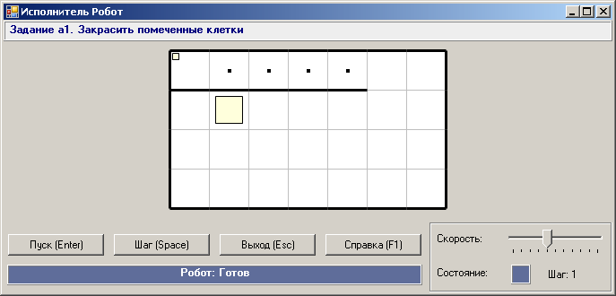
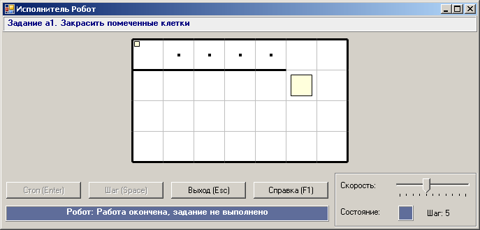
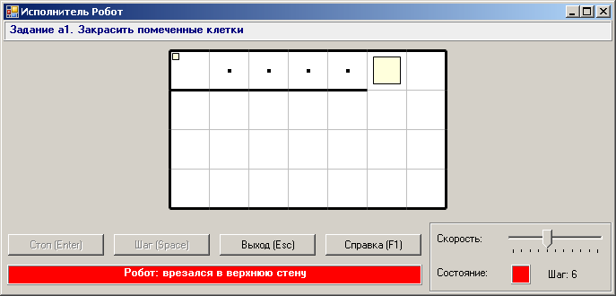
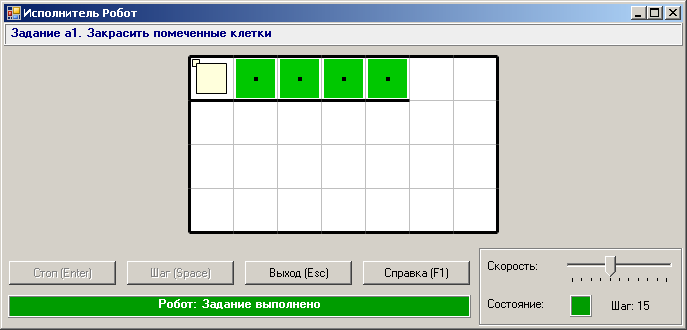

Задание a1 относится к вводным заданиям, посвященным знакомству с основными командами исполнителя Робот. Приведем формулировку этого задания.
a1. Закрасить помеченные клетки.
Опишем сценарий решения задания.
Шаг 1. Подключим
к программе модуль Robot и вызовем в
начале программы процедуру Task, передав ей в
качестве параметра имя задания:
uses Robot;
begin
Task('a1');
end.
Чтобы не набирать указанный текст, нажмем кнопку
 и
в появившемся окне наберем имя задания
и
в появившемся окне наберем имя задания RBa1 (префикс RB
означает, что решается задача для Робота). Запустим программу (нажав клавишу F9), чтобы увидеть окно Робота с
графическим изображением задания:

Шаг 2. Наберем несколько команд Робота:
uses Robot;
begin
Task('a1');
Right;Right;Right;Right;
end.
Запустим программу, после чего нажмем Enter или кнопку «Пуск» чтобы Робот начал выполнять заложенную в него программу:

После окончания движения Робота осуществляется проверка, все ли помеченные клетки закрашены и находится ли Робот в конечной клетке. Если проверка дает отрицательный ответ, то задание не считается выполненным.
Шаг 3. Выполним неверную команду, в результате которой Робот врежется в стенку:
uses Robot;
begin
Task('a1');
Right;Right;Right;Right;
Up;Up;Left;
end.
После запуска программы и нажатия Enter получим следующее окно:

Заметим, что квадратный индикатор состояния Робота окрасился в красный цвет, а
последняя команда Left не выполнилась, так как
после фатальной ошибки Робот прекратил выполнение задания.
Шаг 4. Исправим ошибку и выполним задание до конца:
uses Robot;
begin
Task('a1');
Right;Right;Right;Right;
Up;
Left;Paint;
Left;Paint;
Left;Paint;
Left;Paint;
Left;
end.

Последний рисунок не нуждается в комментариях.
Заметим, что сведения о выполненных заданиях
можно просмотреть, нажав кнопку
 .
.